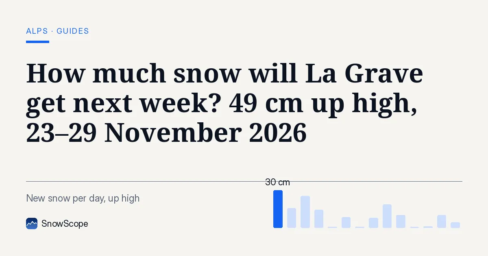
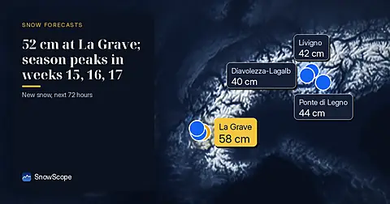

How much snow will La Grave get next week? 49 cm up high, 23–29 November 2026
Wednesday 25 November is the day to circle for La Grave. It carries the biggest single share of next week's snow, and over the whole week of 23–29 November the top around 3400 m collects 49 cm (23–74 cm) while the base gets 23 cm.
See the live snow forecast for La Grave in the SnowScope appSnow depth, powder alerts and the 3D map, free.

Where the good snow will be
Wednesday 25 November is the snowiest day up top: 19 cm in the middle of our forecast and up to 25 cm in the high case. The morning after a snowy day is usually the one to ski, once lifts and patrols have caught up.
The snow lies best on the Girose glacier under La Meije. For the softest turns, look to the north-facing couloirs and glacier slopes below La Meije, high mountain terrain for guided skiers only. Lower down, the village on the Romanche road at the foot of the lift will be the first to suffer if the air turns mild.
The numbers for 23–29 November
Read from the top down: 49 cm near 3400 m, 43 cm near 2500 m, 23 cm near 1500 m. The low-to-high spread is 23–74 cm at the top and 7–39 cm at the base.
Most of the total arrives on Tuesday 24 (8 cm, up to 11), Wednesday 25 (19 cm, up to 25), Thursday 26 (10 cm, up to 14) and Sunday 29 (10 cm, up to 20), counted at the top as the middle of our forecast and the high case.
The base it lands on
Before next week even starts, La Grave should be holding a deep fresh layer up high: 85 cm from Tuesday 17 to Friday 20 November (58–112 cm), while the base sees 12 cm. The second storm then builds on it.
Where the snow line sits
At the base the total drops to 23 cm, roughly half of the top. Expect heavier, wetter snow on the lower runs and a snow line that wanders around village level on the mildest day.
La Grave has almost no groomed runs: snow here is for experts with a guide, rescue kit and a reason to be there.
How nearby resorts compare
Same week, same measure (top of each resort): Les 2 Alpes (10 km away) 47 cm; Alpe d'Huez (18 km away) 40 cm; Serre Chevalier (24 km away) 47 cm. La Grave itself: 49 cm.
The differences are small: the storm covers this whole corner of the Alps evenly, so pick on terrain and lifts, not on the snow total.
What could change
Reasonably, with a caveat. The snow is coming to La Grave, but the top could end up anywhere between 23 and 74 cm, and the middle value of 49 cm is only the halfway mark.
A forecast seven to thirteen days out is a trend, not a ticket.
Tips for skiers
- Before leaving the pistes in La Grave, check the French avalanche bulletin (BERA) for the massif.
- Opening dates are the resort's call; our numbers only say how much snow is coming.
- Plan around the top's 49 cm, and keep the high case of 74 cm as a bonus.
More maps (external sites)
About these numbers
Snow numbers: our two-week snow forecast issued on 16 November 2026, read at three heights of the resort (top, mid-mountain, base). Each total is the middle of a range, with a low and a high case. These are estimates for the slopes, not resort measurements, and forecasts move from day to day: check the live map before you go.
Cite this report
For research, teaching or the press: the numbers and charts are free to reuse under CC BY 4.0 with this citation.
SnowScope (2026), How much snow will La Grave get next week? 49 cm up high, 23–29 November 2026, https://snowscope.app/blog/en/2026/11/la-grave-powder-forecast-next-week-23-29-november-2026.html, accessed 2026-11-16
SnowScope (Atlas Labs). (2026, November 16). How much snow will La Grave get next week? 49 cm up high, 23–29 November 2026. SnowScope snow reports. https://snowscope.app/blog/en/2026/11/la-grave-powder-forecast-next-week-23-29-november-2026.html
BibTeX
@misc{snowscope2026lagravepowderforecastnex,
author = {{SnowScope (Atlas Labs)}},
title = {How much snow will La Grave get next week? 49 cm up high, 23–29 November 2026},
year = {2026},
month = nov,
howpublished = {\url{https://snowscope.app/blog/en/2026/11/la-grave-powder-forecast-next-week-23-29-november-2026.html}},
note = {Published 2026-11-16 11:25 UTC; accessed 2026-11-16}
}· CC BY 4.0 · Methods, data and tools →
La Grave: snow and temperature by height, this winter vs last (tools) →
Follow La Grave
Free: a message when fresh snow is coming, and the forecast every morning.
More snow reports

La Grave leads the Alps with 52 cm forecast in 24 hours as of 11 November; early snow arrives weeks before peak accumulation.

Dent de Vaulion's upper slopes face rain as freezing level reaches 2800 m Thursday; higher resorts get fresh snow for the weekend.

Les Deux Alpes snow forecast compared with the region: 51 cm by 14 November. The snow cover shrank from 45,820 km² on 9 November to 38,440 km² today, …